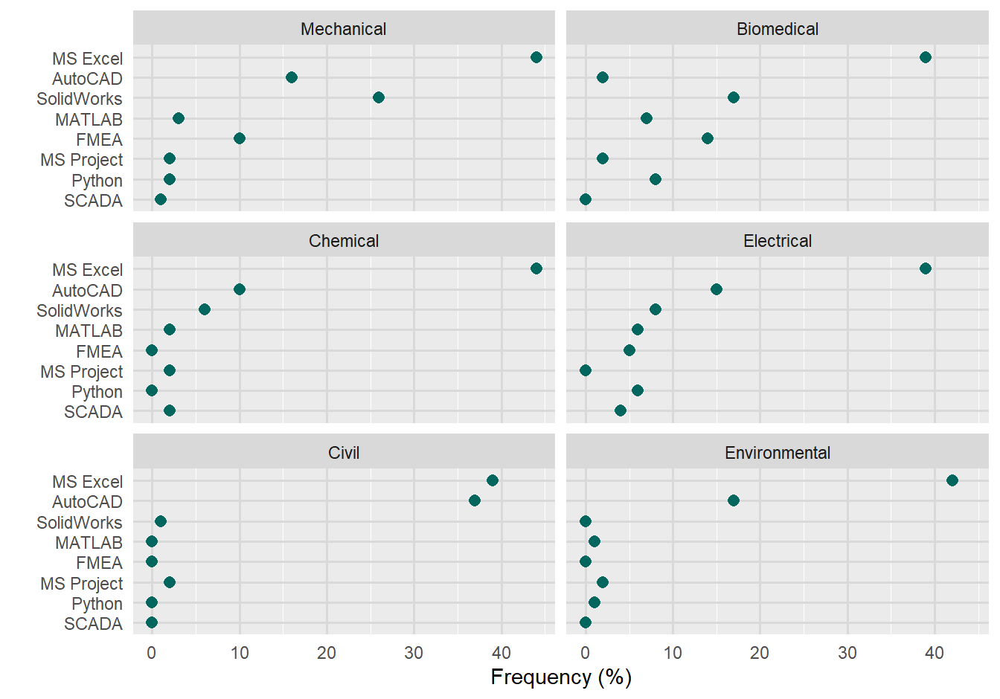
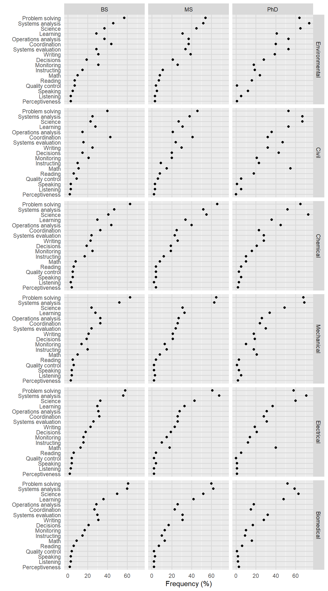
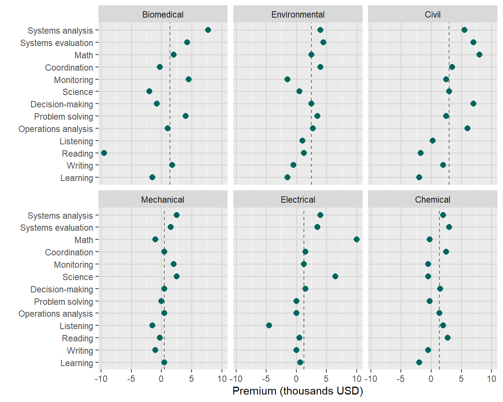
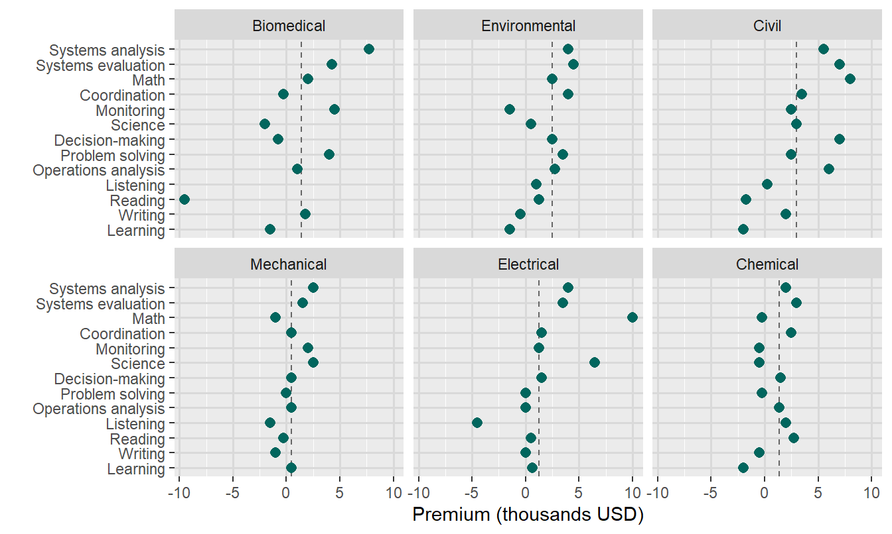
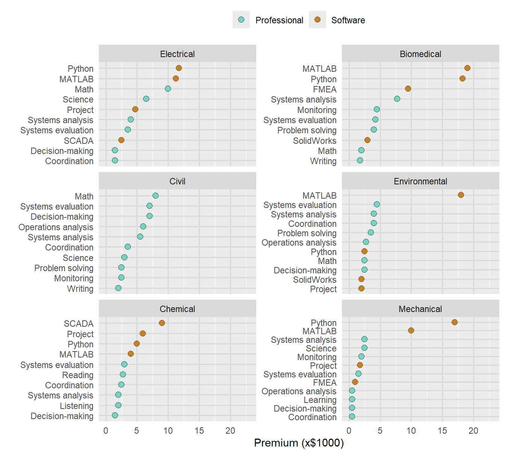

R code
library(data.table)
library(midfieldr)
library(ggplot2)
library(tidytext)
library(ggrepel)Redesign JEE charts.
Richard Layton
2024–06–12
Another JEE chart redesign for fun.
In a recent article, the authors etc etc etc (Fleming et al., 2024)
In the original Table 3, the authors show the frequency of the eight most frequently occurring technical (i.e., software) skills in bachelor’s-level postings.
| Skill | Biomedical | Chemical | Civil | Electrical | Environmental | Mechanical |
|---|---|---|---|---|---|---|
| MS Excel | 39 | 44 | 39 | 39 | 42 | 44 |
| AutoCAD | 2 | 10 | 37 | 15 | 17 | 16 |
| SolidWorks | 17 | 6 | 1 | 8 | 0 | 26 |
| MATLAB | 7 | 2 | 0 | 6 | 1 | 3 |
| SCADA | 0 | 2 | 0 | 4 | 0 | 1 |
| FMEA | 14 | 0 | 0 | 5 | 0 | 10 |
| Python | 8 | 0 | 0 | 6 | 1 | 2 |
| MS Project | 2 | 2 | 2 | 0 | 2 | 2 |
The author’s discussion of this table.
Microsoft Excel occurs in 39% of bachelor’s-level biomedical engineering advertisements. Many advertisements included more than one of these skills. In addition to being important for all educational levels, Microsoft Excel was also the most frequently mentioned technical skill in bachelor’s-level job advertisements for all engineering disciplines. Specific engineering disciplines also had additional software preferences: AutoCAD was mentioned in one third of civil engineering job advertisements, and SolidWorks appeared frequently in job advertisements in biomedical engineering and mechanical engineering.
Restructure data
Chart

Reading a multiway graph
We can more effectively compare values within a panel than between panels.
Because rows are ordered, one expects a generally increasing trend within a panel. A response greater or smaller than expected creates a visual asymmetry. The interesting stories are often in these visual anomalies.
What the visualization suggests in addition to the authors’ original discussion.
Biomedical has a higher frequency of more skills than other majors, with Mechanical a close second, suggesting these majors expect a greater breadth of software skills than other majors.
In contrast, Civil and Environmental are interested only in the top two skills: MS Excel and AutoCAD.
In the original Table A1, the authors show the frequency of the eight most frequently occurring professional skills in bachelor’s-level , Master’s-level, and PhD-level postings.
| skill | BS | MS | PhD |
|---|---|---|---|
| Learning | 36 | 42 | 48 |
| Listening | 3 | 2 | 2 |
| Problem solving | 61 | 60 | 52 |
| Coordination | 27 | 23 | 15 |
| Instructing | 15 | 10 | 9 |
| Decisions | 21 | 17 | 17 |
| Math | 9 | 13 | 16 |
| Monitoring | 17 | 13 | 10 |
| Operations analysis | 29 | 26 | 18 |
| Quality control | 4 | 2 | 1 |
| Reading | 6 | 7 | 6 |
| Science | 50 | 52 | 63 |
| Perceptiveness | 2 | 2 | 3 |
| Speaking | 3 | 3 | 2 |
| Systems analysis | 60 | 62 | 59 |
| Systems evaluation | 30 | 31 | 32 |
| Writing | 31 | 31 | 28 |
dframe <- wrapr::build_frame(
"skill" , "BS", "MS", "PhD" |
"Learning" , 30, 34, 36 |
"Listening" , 3, 2, 3 |
"Problem solving" , 63, 66, 65 |
"Coordination" , 33, 25, 23 |
"Instructing" , 17, 12, 10 |
"Decisions" , 19, 19, 21 |
"Math" , 8, 8, 10 |
"Monitoring" , 25, 19, 16 |
"Operations analysis", 44, 40, 45 |
"Quality control" , 5, 4, 3 |
"Reading" , 6, 4, 5 |
"Science" , 41, 55, 73 |
"Perceptiveness" , 4, 4, 2 |
"Speaking" , 5, 4, 5 |
"Systems analysis" , 47, 52, 52 |
"Systems evaluation" , 24, 23, 28 |
"Writing" , 23, 26, 28 )
setDT(dframe)
chemical <- melt(dframe,
id.vars = "skill",
variable.name = "degree",
value.name = "frequency",
variable.factor = FALSE)
chemical[, major := "Chemical"]
setcolorder(chemical, c("major", "degree"))dframe <- wrapr::build_frame(
"skill" , "BS", "MS", "PhD" |
"Learning" , 28, 31, 53 |
"Listening" , 3, 3, 5 |
"Problem solving" , 40, 46, 53 |
"Coordination" , 43, 41, 32 |
"Instructing" , 10, 9, 23 |
"Decisions" , 15, 20, 43 |
"Math" , 11, 15, 55 |
"Monitoring" , 21, 20, 21 |
"Operations analysis", 15, 21, 36 |
"Quality control" , 9, 6, 5 |
"Reading" , 6, 8, 18 |
"Science" , 23, 27, 67 |
"Perceptiveness" , 2, 2, 0 |
"Speaking" , 3, 3, 1 |
"Systems analysis" , 25, 38, 67 |
"Systems evaluation" , 16, 24, 47 |
"Writing" , 25, 30, 32 )
setDT(dframe)
civil <- melt(dframe,
id.vars = "skill",
variable.name = "degree",
value.name = "frequency",
variable.factor = FALSE)
civil[, major := "Civil"]
setcolorder(civil, c("major", "degree"))dframe <- wrapr::build_frame(
"skill" , "BS", "MS", "PhD" |
"Learning" , 30, 33, 37 |
"Listening" , 3, 2, 1 |
"Problem solving" , 58, 61, 58 |
"Coordination" , 32, 26, 28 |
"Instructing" , 16, 10, 12 |
"Decisions" , 18, 19, 21 |
"Math" , 13, 18, 40 |
"Monitoring" , 16, 15, 14 |
"Operations analysis", 31, 28, 31 |
"Quality control" , 4, 2, 0 |
"Reading" , 6, 4, 5 |
"Science" , 33, 43, 60 |
"Perceptiveness" , 2, 2, 1 |
"Speaking" , 4, 4, 1 |
"Systems analysis" , 56, 68, 71 |
"Systems evaluation" , 26, 26, 31 |
"Writing" , 23, 23, 19 )
setDT(dframe)
electrical <- melt(dframe,
id.vars = "skill",
variable.name = "degree",
value.name = "frequency",
variable.factor = FALSE)
electrical[, major := "Electrical"]
setcolorder(electrical, c("major", "degree"))dframe <- wrapr::build_frame(
"skill" , "BS", "MS", "PhD" |
"Learning" , 29, 31, 41 |
"Listening" , 3, 3, 5 |
"Problem solving" , 57, 54, 64 |
"Coordination" , 44, 37, 40 |
"Instructing" , 15, 11, 19 |
"Decisions" , 19, 21, 28 |
"Math" , 10, 8, 24 |
"Monitoring" , 31, 26, 18 |
"Operations analysis", 37, 37, 53 |
"Quality control" , 7, 4, 1 |
"Reading" , 7, 7, 16 |
"Science" , 37, 45, 65 |
"Perceptiveness" , 3, 3, 1 |
"Speaking" , 5, 5, 12 |
"Systems analysis" , 46, 52, 74 |
"Systems evaluation" , 29, 34, 53 |
"Writing" , 31, 39, 39 )
setDT(dframe)
environ <- melt(dframe,
id.vars = "skill",
variable.name = "degree",
value.name = "frequency",
variable.factor = FALSE)
environ[, major := "Environmental"]
setcolorder(environ, c("major", "degree"))dframe <- wrapr::build_frame(
"skill" , "BS", "MS", "PhD" |
"Learning" , 28, 33, 34 |
"Listening" , 4, 3, 5 |
"Problem solving" , 63, 65, 68 |
"Coordination" , 33, 26, 24 |
"Instructing" , 20, 15, 18 |
"Decisions" , 19, 21, 19 |
"Math" , 10, 8, 21 |
"Monitoring" , 14, 13, 10 |
"Operations analysis", 33, 27, 26 |
"Quality control" , 6, 2, 1 |
"Reading" , 5, 4, 3 |
"Science" , 24, 31, 49 |
"Perceptiveness" , 3, 2, 2 |
"Speaking" , 4, 2, 3 |
"Systems analysis" , 52, 63, 69 |
"Systems evaluation" , 24, 24, 30 |
"Writing" , 21, 21, 18 )
setDT(dframe)
mechanical <- melt(dframe,
id.vars = "skill",
variable.name = "degree",
value.name = "frequency",
variable.factor = FALSE)
mechanical[, major := "Mechanical"]
setcolorder(mechanical, c("major", "degree"))DT <- rbindlist(list(biomed, chemical, civil, electrical, environ, mechanical))
ggplot(DT, aes(x = frequency, y = reorder(skill, frequency, median))) +
facet_grid(reorder(major, frequency, median) ~ degree,
as.table = FALSE) +
geom_point() +
labs(x = "Frequency (%)", y = "")+
theme(panel.grid.major = element_line(linewidth = 0.6, color = "gray85"),
axis.ticks = element_blank())
| Professional skill | Biomedical | Chemical | Civil | Electrical | Environmental | Mechanical |
|---|---|---|---|---|---|---|
| Systems analysis | 7750 | 2000 | 5500 | 4000 | 4000 | 2500 |
| Systems evaluation | 4250 | 3000 | 7000 | 3500 | 4500 | 1520 |
| Math | 2000 | -250 | 8000 | 10000 | 2500 | -1000 |
| Decision-making | -750 | 1500 | 7000 | 1500 | 2500 | 500 |
| Coordination | -250 | 2500 | 3500 | 1500 | 4000 | 500 |
| Operations analysis | 1000 | 1340 | 6000 | 0 | 2750 | 500 |
| Science | -2000 | -500 | 3000 | 6500 | 500 | 2500 |
| Problem solving | 4000 | -250 | 2500 | 0 | 3500 | 0 |
| Monitoring | 4500 | -500 | 2500 | 1250 | -1500 | 2000 |
| Writing | 1750 | -500 | 2000 | 0 | -500 | -1000 |
| Listening | NA | 2000 | 250 | -4500 | 1000 | -1500 |
| Learning | -1500 | -2000 | -2000 | 650 | -1500 | 500 |
| Reading | -9500 | 2750 | -1750 | 500 | 1250 | -250 |
skill_prof <- melt(skill_prof,
id.vars = "Professional skill",
variable.name = "major",
value.name = "premium",
variable.factor = FALSE)
skill_prof[, skill_group := "Professional"]
setnames(skill_prof, old = c("Professional skill"), new = c("skill"))
setcolorder(skill_prof, c("skill_group"))
skill_prof skill_group skill major premium
<char> <char> <char> <num>
1: Professional Systems analysis Biomedical 7750
2: Professional Systems evaluation Biomedical 4250
3: Professional Math Biomedical 2000
4: Professional Decision-making Biomedical -750
5: Professional Coordination Biomedical -250
---
74: Professional Monitoring Mechanical 2000
75: Professional Writing Mechanical -1000
76: Professional Listening Mechanical -1500
77: Professional Learning Mechanical 500
78: Professional Reading Mechanical -250ggplot(x, aes(x = premium/1000, y = skill)) +
geom_vline(aes(xintercept = major_median/1000), linetype = 2, color = "gray40") +
geom_point(size = 2.5, shape = 16, color = "#01665e") +
facet_wrap(vars(major), as.table = FALSE, ncol = 3) +
labs(x = "Premium (thousands USD)", y = "") +
theme(panel.grid.major = element_line(linewidth = 0.6, color = "gray85")) 
| Technical skill | Biomedical | Chemical | Civil | Electrical | Environmental | Mechanical |
|---|---|---|---|---|---|---|
| MATLAB | 19000 | 4000 | NA | 11250 | 18000 | 10000 |
| Python | 18250 | 5000 | NA | 11750 | 2500 | 17000 |
| SCADA | NA | 9000 | NA | 2500 | NA | NA |
| FMEA | 9500 | 1250 | NA | 500 | 1250 | 1000 |
| Project | NA | 5950 | -1500 | 4750 | 2000 | 1750 |
| SolidWorks | 3000 | -250 | NA | -7500 | 2000 | -500 |
| Excel | -2000 | -2500 | -3000 | -6000 | -5020 | -2000 |
| PowerPoint | -4000 | -4200 | -500 | -7000 | -3500 | -1750 |
| AutoCAD | NA | -1000 | -5000 | -6500 | -6000 | -3500 |
| Word | -7250 | -5000 | -5250 | -5500 | -6500 | -4500 |
skill_group skill major premium
<char> <char> <char> <num>
1: Software MATLAB Biomedical 19000
2: Software Python Biomedical 18250
3: Software SCADA Biomedical NA
4: Software FMEA Biomedical 9500
5: Software Project Biomedical NA
6: Software SolidWorks Biomedical 3000
7: Software Excel Biomedical -2000
8: Software PowerPoint Biomedical -4000
9: Software AutoCAD Biomedical NA
10: Software Word Biomedical -7250
11: Software MATLAB Chemical 4000
12: Software Python Chemical 5000
13: Software SCADA Chemical 9000
14: Software FMEA Chemical 1250
15: Software Project Chemical 5950
16: Software SolidWorks Chemical -250
17: Software Excel Chemical -2500
18: Software PowerPoint Chemical -4200
19: Software AutoCAD Chemical -1000
20: Software Word Chemical -5000
21: Software MATLAB Civil NA
22: Software Python Civil NA
23: Software SCADA Civil NA
24: Software FMEA Civil NA
25: Software Project Civil -1500
26: Software SolidWorks Civil NA
27: Software Excel Civil -3000
28: Software PowerPoint Civil -500
29: Software AutoCAD Civil -5000
30: Software Word Civil -5250
31: Software MATLAB Electrical 11250
32: Software Python Electrical 11750
33: Software SCADA Electrical 2500
34: Software FMEA Electrical 500
35: Software Project Electrical 4750
36: Software SolidWorks Electrical -7500
37: Software Excel Electrical -6000
38: Software PowerPoint Electrical -7000
39: Software AutoCAD Electrical -6500
40: Software Word Electrical -5500
41: Software MATLAB Environmental 18000
42: Software Python Environmental 2500
43: Software SCADA Environmental NA
44: Software FMEA Environmental 1250
45: Software Project Environmental 2000
46: Software SolidWorks Environmental 2000
47: Software Excel Environmental -5020
48: Software PowerPoint Environmental -3500
49: Software AutoCAD Environmental -6000
50: Software Word Environmental -6500
51: Software MATLAB Mechanical 10000
52: Software Python Mechanical 17000
53: Software SCADA Mechanical NA
54: Software FMEA Mechanical 1000
55: Software Project Mechanical 1750
56: Software SolidWorks Mechanical -500
57: Software Excel Mechanical -2000
58: Software PowerPoint Mechanical -1750
59: Software AutoCAD Mechanical -3500
60: Software Word Mechanical -4500
skill_group skill major premiumggplot(x, aes(x = premium/1000, y = skill)) +
geom_vline(aes(xintercept = major_median/1000), linetype = 2, color = "gray40") +
geom_point(size = 2.5, shape = 16, color = "#01665e") +
facet_wrap(vars(major), as.table = FALSE, ncol = 3) +
labs(x = "Premium (thousands USD)", y = "") +
theme(panel.grid.major = element_line(linewidth = 0.6, color = "gray85")) 
skill_group skill major premium
<char> <char> <char> <num>
1: Professional Systems analysis Biomedical 7750
2: Professional Systems evaluation Biomedical 4250
3: Professional Math Biomedical 2000
4: Professional Decision-making Biomedical -750
5: Professional Coordination Biomedical -250
---
134: Software SolidWorks Mechanical -500
135: Software Excel Mechanical -2000
136: Software PowerPoint Mechanical -1750
137: Software AutoCAD Mechanical -3500
138: Software Word Mechanical -4500DT <- DT[!is.na(premium)]
DT[, premium := premium / 1000]
DT[, rank := frankv(premium, order = 1), by = c("major")]
setorderv(DT, cols = c("major", "rank"), order = -1)
DT[, cutoff := rank[10], by = c("major")]
DT <- DT[rank >= cutoff]
DT[, sum_premium := sum(premium), by = c("major")]
DT[, max_rank := max(rank), by = c("skill_group", "major")]
DT skill_group skill major premium rank cutoff sum_premium
<char> <char> <char> <num> <num> <num> <num>
1: Software Python Mechanical 17.00 22.0 12.5 40.27
2: Software MATLAB Mechanical 10.00 21.0 12.5 40.27
3: Professional Systems analysis Mechanical 2.50 19.5 12.5 40.27
4: Professional Science Mechanical 2.50 19.5 12.5 40.27
5: Professional Monitoring Mechanical 2.00 18.0 12.5 40.27
---
59: Professional Systems evaluation Biomedical 4.25 14.0 10.0 74.00
60: Professional Problem solving Biomedical 4.00 13.0 10.0 74.00
61: Software SolidWorks Biomedical 3.00 12.0 10.0 74.00
62: Professional Math Biomedical 2.00 11.0 10.0 74.00
63: Professional Writing Biomedical 1.75 10.0 10.0 74.00
max_rank
<num>
1: 22.0
2: 22.0
3: 19.5
4: 19.5
5: 19.5
---
59: 16.0
60: 16.0
61: 19.0
62: 16.0
63: 16.0# DT[, cutoff := max(max_rank) - 7, by = major]
# x <- copy(DT)
# setorderv(x, c("major", "rank"), order = -1)
# x <- x[, .SD[1:8], by = c("major")]
# x[, sum_premium := sum(premium), by = c("major")]
# x <- x[, .(major, sum_premium)]
# x <- unique(x)
# x
#
# DT <- DT[x, on = "major"]
my_legend <- copy(DT)
setorderv(my_legend, c("skill"), order = -1)
my_legend <- my_legend[rank == max_rank]
my_legend <- my_legend[, .SD[1], by = c("major", "skill_group")]
my_legend major skill_group skill premium rank cutoff
<char> <char> <char> <num> <num> <num>
1: Environmental Professional Systems evaluation 4.50 21.0 12.5
2: Chemical Professional Systems evaluation 3.00 19.0 14.0
3: Mechanical Professional Systems analysis 2.50 19.5 12.5
4: Biomedical Professional Systems analysis 7.75 16.0 10.0
5: Chemical Software SCADA 9.00 23.0 14.0
6: Mechanical Software Python 17.00 22.0 12.5
7: Electrical Software Python 11.75 23.0 14.5
8: Electrical Professional Math 10.00 21.0 14.5
9: Civil Professional Math 8.00 18.0 9.0
10: Environmental Software MATLAB 18.00 22.0 12.5
11: Biomedical Software MATLAB 19.00 19.0 10.0
sum_premium max_rank
<num> <num>
1: 48.25 21.0
2: 37.70 19.0
3: 40.27 19.5
4: 74.00 16.0
5: 37.70 23.0
6: 40.27 22.0
7: 57.25 23.0
8: 57.25 21.0
9: 47.00 18.0
10: 48.25 22.0
11: 74.00 19.0 major skill_group skill premium rank cutoff
<char> <char> <char> <num> <num> <num>
1: Environmental Professional Systems evaluation 4.50 21.0 12.5
2: Chemical Professional Systems evaluation 3.00 19.0 14.0
3: Mechanical Professional Systems analysis 2.50 19.5 12.5
4: Biomedical Professional Systems analysis 7.75 16.0 10.0
5: Chemical Software SCADA 9.00 23.0 14.0
6: Mechanical Software Python 17.00 22.0 12.5
7: Electrical Software Python 11.75 23.0 14.5
8: Electrical Professional Math 10.00 21.0 14.5
9: Civil Professional Math 8.00 18.0 9.0
10: Environmental Software MATLAB 18.00 22.0 12.5
11: Biomedical Software MATLAB 19.00 19.0 10.0
sum_premium max_rank
<num> <num>
1: 48.25 21.0
2: 37.70 19.0
3: 40.27 19.5
4: 74.00 16.0
5: 37.70 23.0
6: 40.27 22.0
7: 57.25 23.0
8: 57.25 21.0
9: 47.00 18.0
10: 48.25 22.0
11: 74.00 19.0x <- copy(DT)
x <- x[rank >= cutoff]
x[, max_rank := max_rank - cutoff]
x[, rank := rank - cutoff]
x[, cutoff := 0]
# my_legend[, max_rank := max_rank - cutoff]
# my_legend[, rank := rank - cutoff]
# my_legend[, cutoff := 0]
ggplot(x, aes(x = premium,
y = reorder_within(x = skill,
by = premium,
within = major),
color = skill_group,
fill = skill_group)) +
# geom_vline(xintercept = 0, color = "gray70", linetype = 2) +
# geom_hline(data = my_legend,
# aes(yintercept = cutoff),
# color = "gray70",
# linetype = 2) +
geom_point(size = 2.5, shape = 21) +
labs(x = "Premium (x$1000)", y = "") +
facet_wrap(vars(reorder(major, sum_premium)),
ncol = 2,
scales = "free_y",
as.table = FALSE) +
scale_y_discrete(labels = function(x) gsub("__.+$", "", x)) +
scale_x_continuous(limits = c(0, 23), breaks = seq(-20, 30, 5)) +
# geom_text(data = my_legend,
# aes(x = premium, y = max_rank, label = skill_group),
# hjust = -0.1,
# vjust = 0.7) +
theme(legend.position = "top",
legend.title = element_blank(),
axis.ticks = element_blank(),
panel.grid.major = element_line(linewidth = 0.6, color = "gray85")) +
# expand_limits(y = c(0)) +
scale_fill_manual(values = c("#80cdc1", "#bf812d")) +
scale_color_manual(values = c("#01665e", "#8c510a")) 